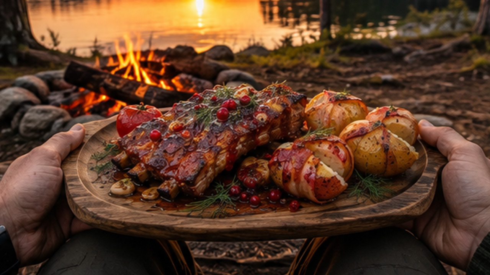

There is something special about preparing a hearty meal beside a campfire, far away from roads, traffic and the noise of everyday life. On this solo camping adventure, I head deep into the wilderness to cook juicy ribs with a rich wild berry glaze and crispy bacon-wrapped potatoes over an open fire.
No kitchen, no restaurant and no complicated equipment. Just a campfire, simple ingredients, fresh air and the peaceful sounds of nature.
The camp is set in a quiet forest surrounded by trees and open wilderness. Once the fire is burning steadily, the cooking can begin.
Outdoor cooking is always a little different from cooking at home. The fire changes constantly, the temperature has to be judged by experience, and every ingredient slowly picks up the unmistakable aroma of wood smoke.

The ribs are slowly cooked over the fire before being covered with a sweet and slightly tangy wild berry glaze. As the sauce heats up, it becomes glossy and begins to caramelize around the meat.
The combination of tender pork, smoky campfire flavor and sweet berry glaze creates a rich contrast that works especially well with outdoor cooking.
The ribs are turned and glazed several times, allowing the sauce to build into a thick, flavorful coating while the fire continues to do its work.
While the ribs are cooking, potatoes are wrapped in bacon and placed near the hot coals. The bacon slowly renders its fat while the potatoes become soft and tender inside.
The result is simple but incredibly satisfying: crispy, smoky bacon on the outside and hot, fluffy potatoes underneath.
One of the best things about camping is discovering how much can be prepared with very little equipment. A good fire, a few basic ingredients and some patience are enough to create a memorable meal.
Cooking outdoors also turns the preparation itself into part of the adventure. Gathering wood, building the fire, preparing the food and waiting for the perfect moment all become part of the experience.
There is no talking in this video. Instead, you can hear the natural sounds of the campsite: crackling firewood, sizzling meat, the sound of cooking and the quiet atmosphere of the surrounding forest.
These natural sounds make the video suitable for relaxing, unwinding after a long day, studying or simply escaping into the atmosphere of a peaceful camping trip.
When the ribs are finally ready and the bacon-wrapped potatoes come off the fire, there is no need for anything complicated. A hot meal beside the campfire, a quiet wilderness setting and a little time away from civilization are more than enough.
This is what solo camping is all about — slowing down, cooking something delicious and enjoying the simple things that are easy to miss in everyday life.
If you enjoy solo camping, bushcraft, campfire cooking, outdoor recipes and relaxing nature sounds, sit back and enjoy this wilderness cooking adventure.
Light a fire, take a deep breath and let the sounds of the forest take you away for a while.